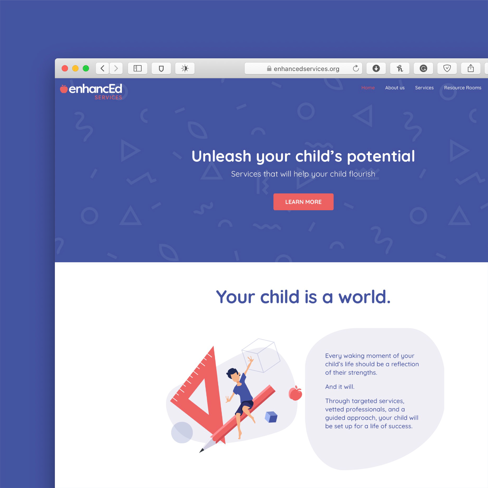
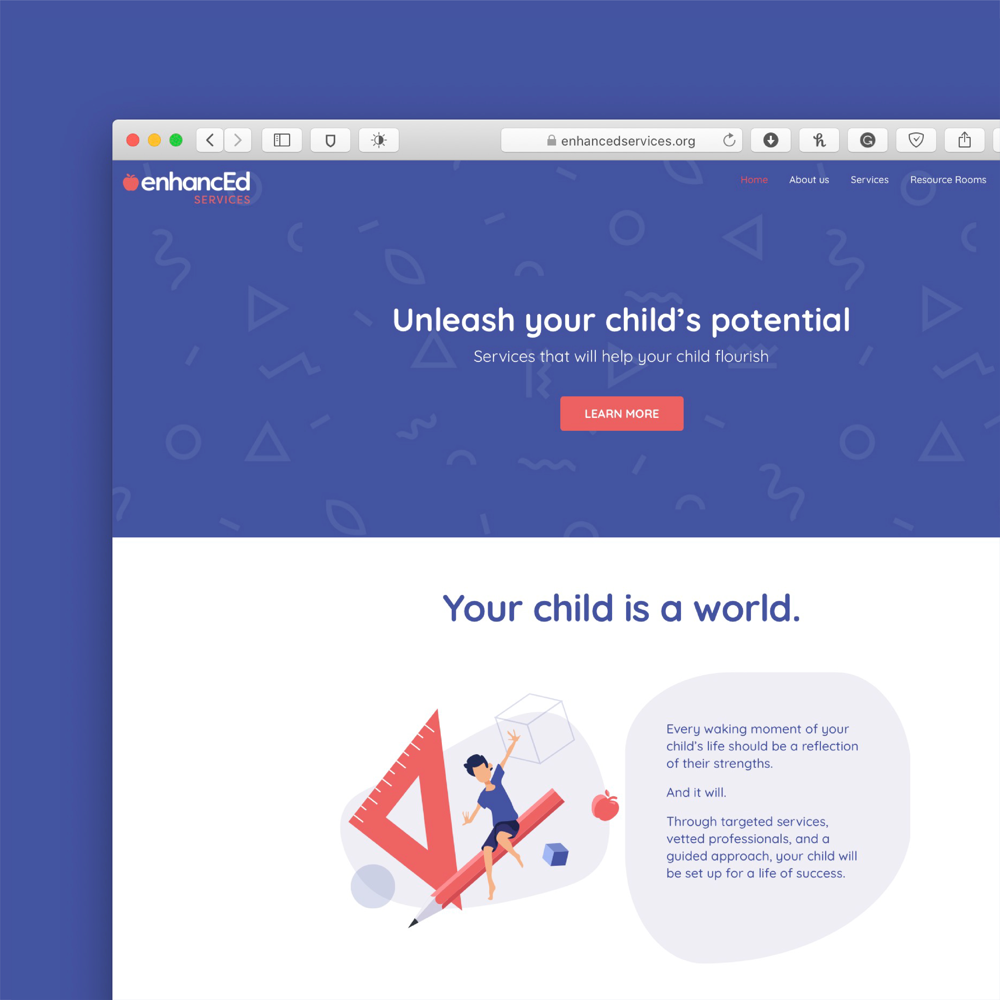

Enhanced Services
EDUCATION
Client: Enhanced Services
Created at: The Pivot Group
The icon, an apple with rounded edges, makes it child friendly and inviting while still maintaining a professional edge.
The typeface used is a clean sans serif that lends an educational vibe and portrays caring and trust.
Blue is a color that makes you feel safe and relaxed;
red, on the other hand, points toward strength, determination and love.
Together, the two colors blend harmoniously to combine a relaxed feeling of trust and a fiery determination to succeed.

 
